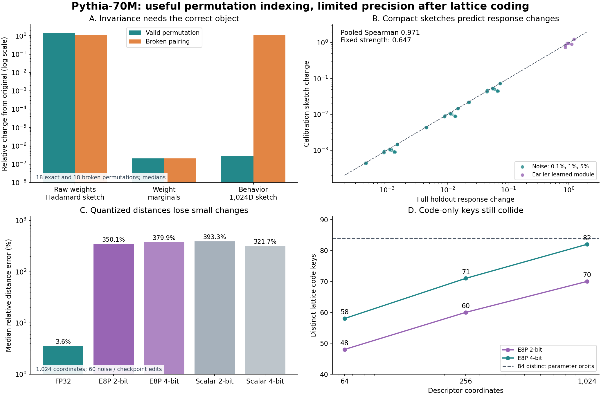

Permutation Invariant Neural Normalization
Decompiling neural computation into inspectable structure.
Source-linked static analysis, bounded functional descriptors, and experiments toward mechanistic decompilation.
Research reports
Implementation 01 · Static FFN disassembly · October 19, 2026
Recover source-linked operations and paired contributions, propose exact shared-gate groups, and inspect the resulting analysis. NumPy-based CLI with explicit scope and budgets.
12,288Pythia contributions inspected
36 / 36transformation controls passed
24tests passed
Static structure and initial algebraic grouping. Semantic circuits are not yet discovered; a saved counterexample demonstrates descriptor collisions.
Experiment 01 · Pythia-70M · October 18, 2026
Exact orbit IDs recognize coherent neuron relabeling. Full-precision behavioral sketches preserve useful response-distance information; lattice compression loses small behavioral differences.
6MLP blocks
102atlas entries
84parameter orbits
Exploratory result. The original whole-model FP32 tolerance failed narrowly; a separate FP64 diagnostic supports a rounding explanation. Semantic function categories and scaling remain untested.
Language specifications
Design draft · MGL v0.2 · October 19, 2026
An analysis language for recovering computational syntax from weights and attaching evidence about function and meaning. Source-linked contributions, overlapping circuits, update relationships, and bounded analysis passes connect the model to a navigable description.
19 sections and a narrow static-FFN implementation. This revision supersedes the runtime-oriented v0.1 draft. General circuit discovery and the comparative atlas remain future work.
Measured overview

All figures come from the preserved measurements. Open the report for methods, numerical checks, and limitations.